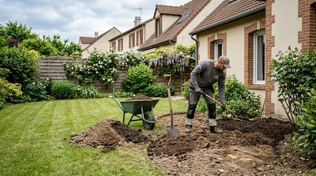
Terrassement
Mise en forme du terrain avant l'aménagement : creusement, déblais et remblais.
Prestations
De la préparation du terrain à la taille des haies : les travaux d'aménagement paysager de Les Jardins d'Alex, de la création du jardin à son entretien.
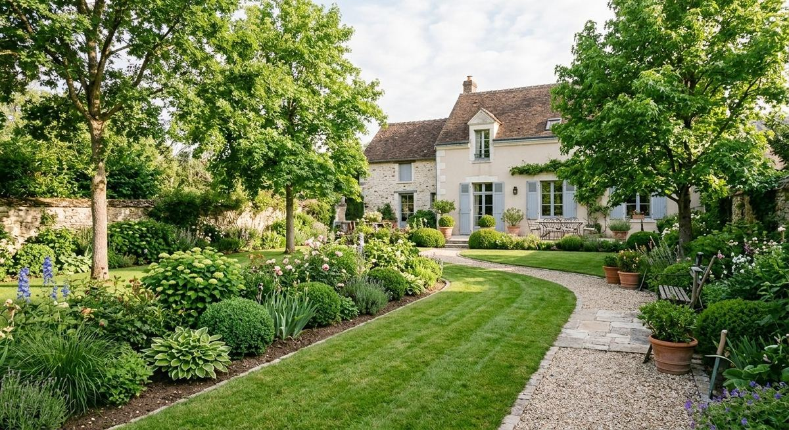
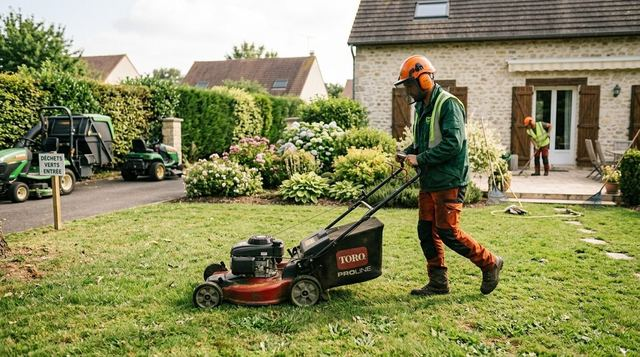
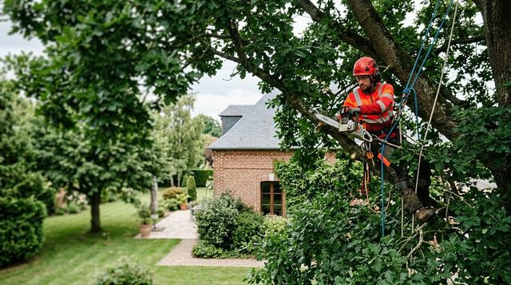
Aménager · le terrain
Un beau jardin commence sous la surface : un terrain travaillé, nivelé, prêt à recevoir ce qu'on y met.

Mise en forme du terrain avant l'aménagement : creusement, déblais et remblais.
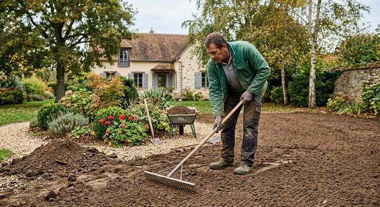
Un sol régulier, prêt pour une pelouse, une allée ou des massifs.
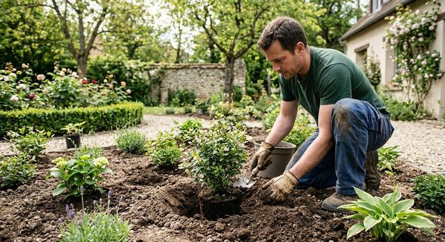
Arbustes, vivaces et massifs mis en terre dans un sol préparé.
Aménager · pierre et bois
Les ouvrages qui structurent un extérieur et relient la maison au jardin.
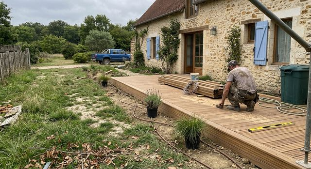
Ossature, lames et finitions, de la préparation à la pose.
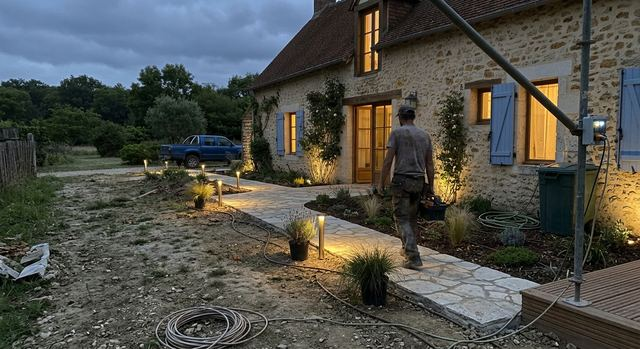
Cheminements en dalles ou en pavés entre la maison, la terrasse et le jardin.
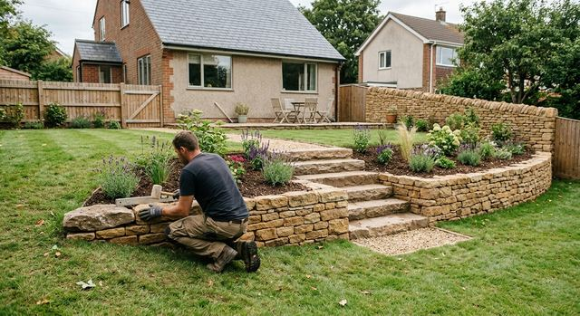
Murets, marches et soutènements en pierre.
Calendrier du jardin
Repères généraux sur les travaux habituels de chaque saison. Le calendrier réel dépend du jardin et de la météo.
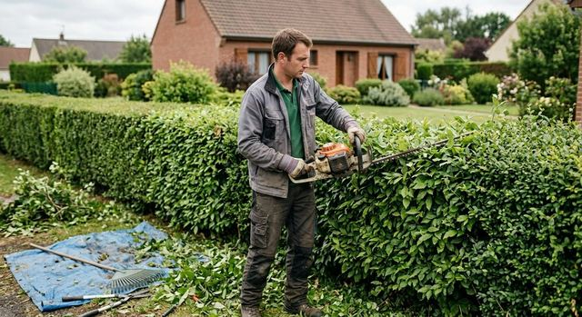
Entretenir
Décrivez ce que vous voulez aménager ou entretenir. Un message suffit pour démarrer la discussion.
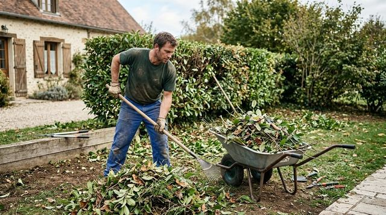